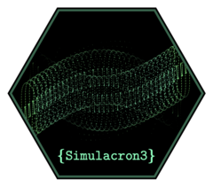
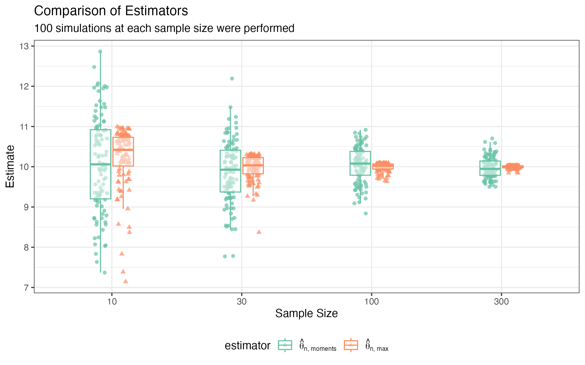

Comparing Estimators
Comparing-Estimators.RmdA famous example of an inference problem where a faster than rate of convergence is possible is that of inferring the parameter in a model.
We will show how a moments based estimator converges slower than an
order statistic based estimator empirically using
{Simulacron3}.
For our first estimator, we will take
And our second estimator will be
library(Simulacron3)
library(dplyr)
#>
#> Attaching package: 'dplyr'
#> The following objects are masked from 'package:stats':
#>
#> filter, lag
#> The following objects are masked from 'package:base':
#>
#> intersect, setdiff, setequal, union
library(ggplot2)
library(tidyr)
# we can fix a true value or even set it to be random as long as we record it.
theta <- 10
# here's our data generating process (dgp):
unif_dgp <- function(n) {
runif(n = n, min = 0, max = theta)
}
estimator1 <- function(x) {
sqrt(3/length(x) * sum(x^2))
}
estimator2 <- function(x) {
(length(x)+1)/(length(x)) * max(x)
}
summary_func <- function(iter = NULL, est_results, data = NULL) {
data.frame(
estimator1 = est_results$estimator1,
estimator2 = est_results$estimator2)
}
sim <- Simulation$new()
sim$set_dgp(unif_dgp)
sim$set_estimators(list(estimator1 = estimator1, estimator2 = estimator2))
sim$set_summary_stats(summary_func)
sim$run()
#> Running simulation...
results <- data.frame()
for (sample_size_i in c(10, 30, 100, 300)) {
sim$set_config(list(sample_size = sample_size_i))
sim$run()
results <- dplyr::bind_rows(
results,
cbind(sample_size = sample_size_i, sim$get_results()))
}
#> Running simulation...
#> Running simulation...
#> Running simulation...
#> Running simulation...
results <- results |> tidyr::pivot_longer(cols = starts_with('estimator'),
values_to = 'estimate',
names_to = 'estimator')
library(ggplot2)
ggplot(results, aes(x = factor(sample_size), y = estimate,
color = estimator, shape = estimator)) +
geom_jitter(position = position_jitterdodge(dodge.width = .35, jitter.width = .10)) +
geom_boxplot(outlier.color = NA, alpha = 0.5, width = .35) +
theme_bw() +
scale_color_brewer(palette = 'Set2') +
ggtitle("Comparison of Estimators", "Each sample size was simulated 100 times") +
labs(x = "Sample Size", y = "Estimate") 